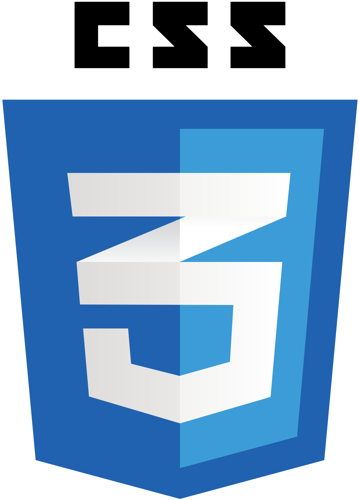
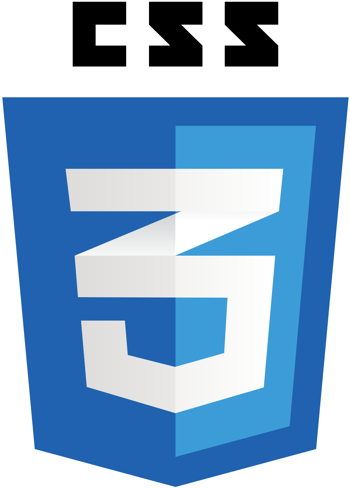

About Me
Hey, there! My name is Emily, and I am from Edwardsville, IL. Originally from the small town of Newton, IL, I moved here to attend SIUE in 2021, which I graduated from in 2023 with a bachelors in Mass Communications and a minor in Computer Science. I am a driven, caring, and fun-loving individual, who loves travelling, playing cards, doing puzzles, and geeking over movies. I am also an avid Denver Broncos fan. My goal is to become a full stack developer, a true blend of my logical and creative talents.
 
